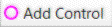

Add/Control
Toolbar Button:

Keyboard Shortcut: Ctrl+A
Adds an existing control from the control collection to the current course, or creates a new control and adds it to the current course. The position of the new control in the current course is chosen as follows:
- If a control (or the start) is selected, the new control is placed immediately following that control.
- If a leg is selected, the new control is placed between the two controls that make up that leg.
- If nothing is selected, the new control is placed between the two control closest to the new control.
When this command is selected, all the controls in the control collection that are not already in the current course are shown in light purple on the current course map.
- To add an existing control to the current course, click on the light purple existing control.
- To add a new control to the current course, click elsewhere on the map. The new control is created with a code selected according to the automatic numbering settings.
If the "All controls" map is displayed, the newly created control is only added to the control collection, but not to any course.